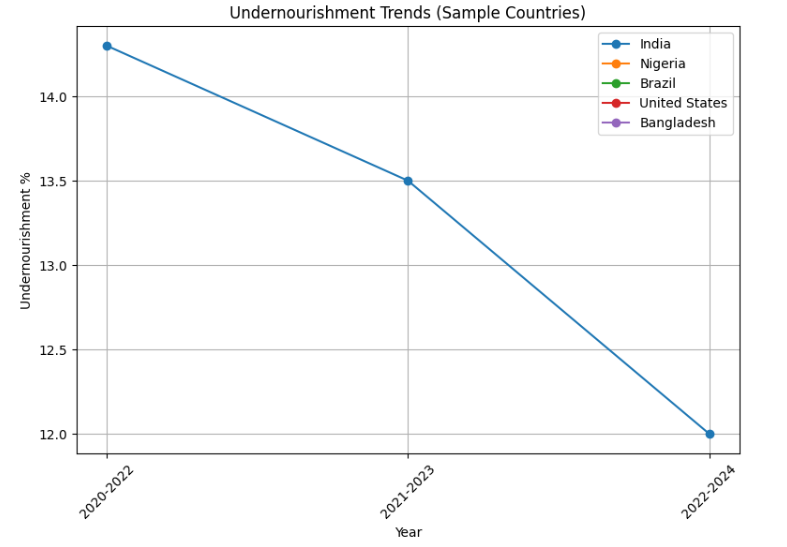
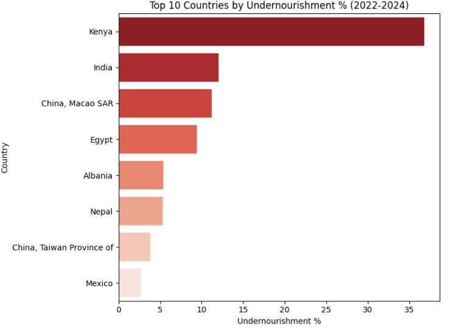
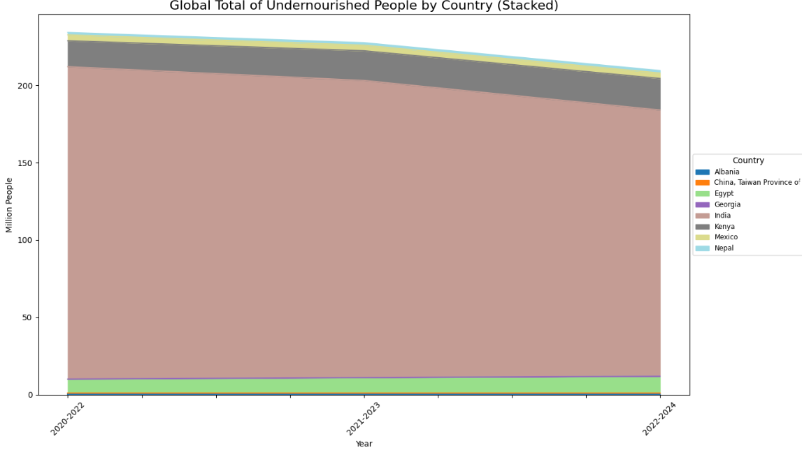
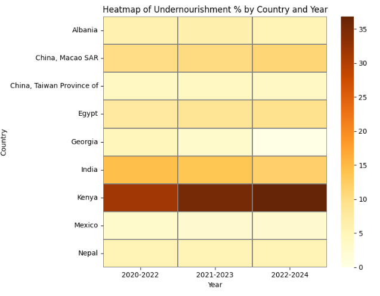
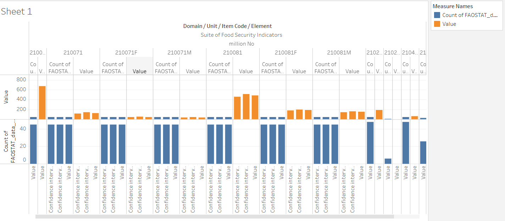
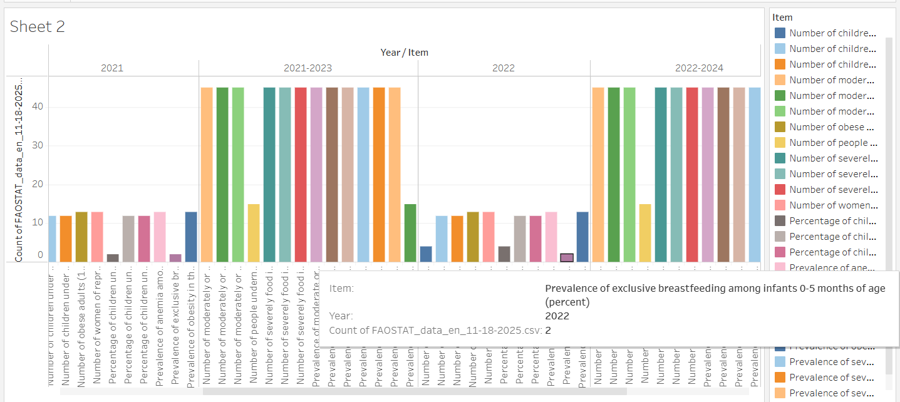

Interactive Visual Report using Python, Tableau, and D3.js
Welcome
This project explores global undernourishment patterns between 2015 and 2022 using data from FAOSTAT.
Through Python, Tableau, and D3.js, we visualized trends in hunger, GDP, dietary intake, and more.
The project aims to inform researchers and policymakers about key patterns in global food insecurity.
Image 1: Raw dataset snapshot used for our analysis.
Python Visualizations
Static analysis using matplotlib and plotly tools.
1.Line Chart of Undernourishment Trends

Observation: Clear increase in undernourishment in certain regions post-2020, possibly due to pandemic disruptions.
2.Bar Chart of Top 10 Countries While undernourishment

Observation: Countries like India and Nigeria consistently show high undernourishment levels across years.
3.Stacked Area Chart of the Undernourished

Observation: Asia dominates the total share of undernourished population globally, but Africa is rising quickly.
4.Undernourishment percentage Heatmap

Observation: A color shift in 2020–2022 indicates rise in food insecurity across many nations.
5.Bubble Chart (GDP, Calories vs. Hunger)
Observation: Higher GDP correlates to lower undernourishment, with a few outliers (e.g., oil-rich nations).
Tableau Dashboards
Interactive Tableau sheets showing domain-wise breakdown and value trends.
1.Domain and Items Comparison(cross bar chart)

Observation: Largest values are associated with basic dietary items, reflecting priority in data collection.
2.Comparison of Year to Year Items(bar chart)

Observation: Dramatic value fluctuation per year suggests evolving methodology or real economic effects.
D3.js Interactive Visualizations
Web-based dynamic charts built with D3.js, hosted on VizHub.
1.Interactive Heatmap
Observation: Hovering over cells shows hotspots of hunger by country/year—darker shades signal worsening trends.
2.Pie + Bar Toggle View
Observation: Changing years alters country rankings, highlighting fluctuations due to policy and aid shifts.
All-in-One Dashboard
All static and interactive visualizations are shown here together for quick comparison. Images are arranged side‑by‑side for easier visual scanning.
Python Summary
Tableau Summary
D3.js Summary
Conclusion
The overall analysis shows that global undernourishment remains a critical issue, with notable spikes after 2020 due to disruptions in supply chains, economic instability, and climatic pressures. By combining Python analytics, Tableau dashboards, and D3.js interactive charts, the project offers a comprehensive visual narrative that highlights both regional disparities and long‑term trends. The visualizations collectively indicate that several countries continue to experience persistent food insecurity despite global improvements.
Python visualizations helped uncover long‑term numerical patterns such as rising hunger levels in regions like Sub‑Saharan Africa and Southern Asia.
Tableau dashboards were useful in summarizing complex domain‑level and item‑level variations across years, giving a structured view of data distribution.
Interactive D3.js charts allowed dynamic filtering, enabling users to explore year‑wise and country‑wise fluctuations with better clarity.
Across all tools, the findings consistently show that economic vulnerabilities, low caloric intake, and regional instability are strongly tied to undernourishment levels.
This multi‑tool visual dashboard can support policy planning, academic research, and early‑warning assessments for global hunger.